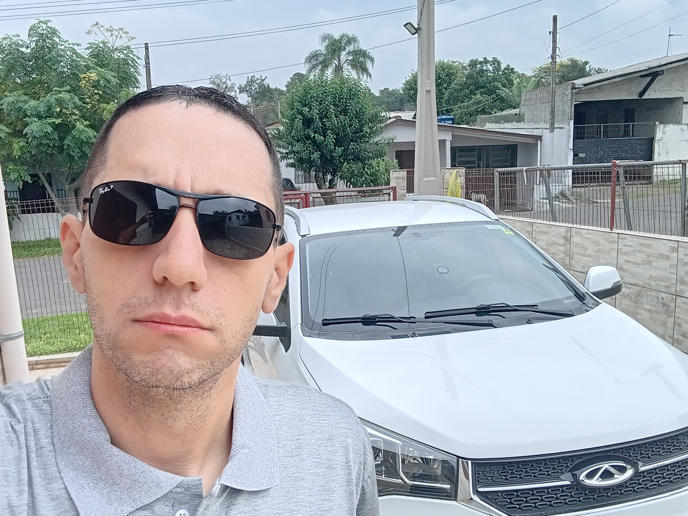

Vinícius Gamarra | WDD 130

Olá! Meu nome é Vinícius Gamarra e sou do Rio Grande do Sul, Brasil. Estou estudando desenvolvimento web no curso WDD 130. Gosto de tecnologia, programação, jogos e aprender novas habilidades.

Olá! Meu nome é Vinícius Gamarra e sou do Rio Grande do Sul, Brasil. Estou estudando desenvolvimento web no curso WDD 130. Gosto de tecnologia, programação, jogos e aprender novas habilidades.